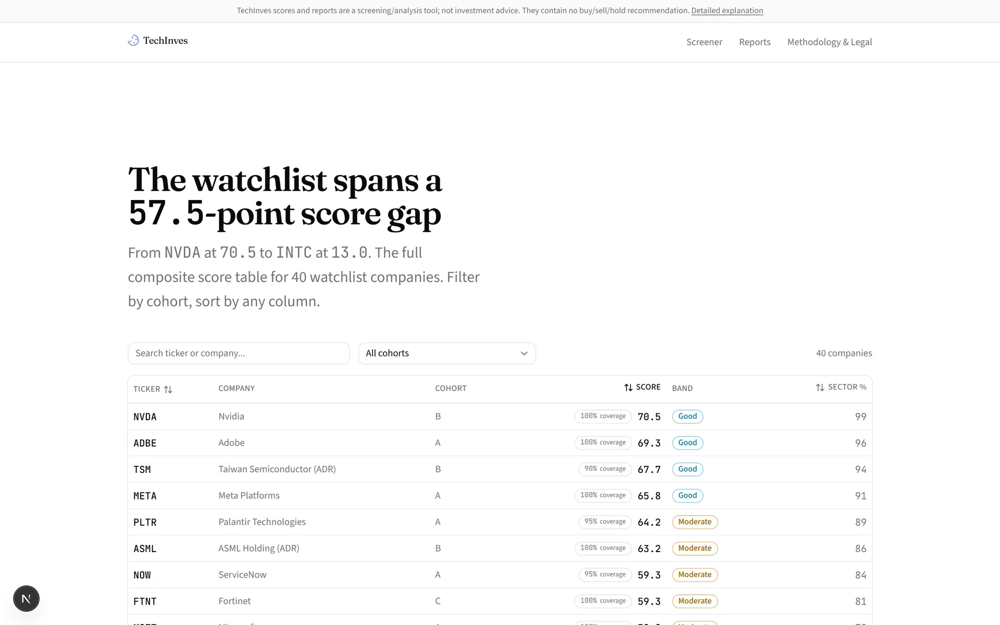
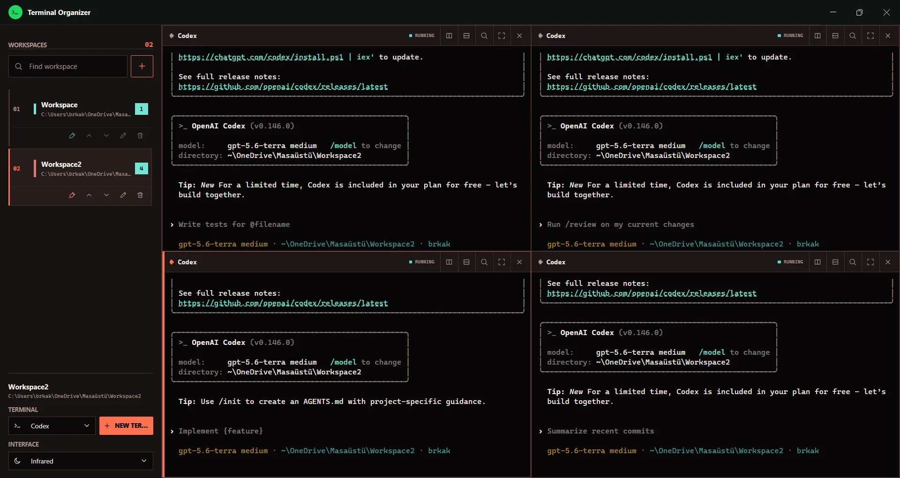

Second Brain OS
Claude Code'a kalıcı hafıza kazandıran, sıfır npm bağımlılığı olan ve tek veritabanı olarak git kullanan bir şablon depo.
- Node.js
- Claude Code Hooks
- Git
- Markdown
- PowerShell
Berke Akyıldız · Antalya
LLM'lerin etrafına, çalışmayı gerçekten güvenilir kılan katmanları inşa ediyorum: paralel araştırma grafikleri, deterministik doğrulayıcılar, kalıcı hafıza ve ölçülebilir değerlendirme. Aşağıdaki dört proje kişisel çalışmalarımdır; hepsinin kaynak kodu açık, hepsindeki sayılar koddan doğrulanmıştır.
Projeler
Her proje sayfasında aynı yapı var: çözülen problem, mimari, kritik kararlar ve ödünleşimleri, doğrulanmış rakamlar ve ekran görüntüleri.
Claude Code'a kalıcı hafıza kazandıran, sıfır npm bağımlılığı olan ve tek veritabanı olarak git kullanan bir şablon depo.

40 teknoloji şirketini SEC verisiyle deterministik olarak puanlayan ve LangGraph ajanlarıyla kaynaklı araştırma raporu üreten kendi kendine barındırılan uygulama.

Her projeye kendi çok panelli terminal alanını veren, projeler arası geçişte oturumları arka planda canlı tutan Windows masaüstü uygulaması.

Yinelenen satırlardan temizlenmiş 302 kayıtlık veri setinde recall'a göre optimize edilmiş, 0.931 recall ile canlıya alınmış LightGBM modeli.
Yaklaşım